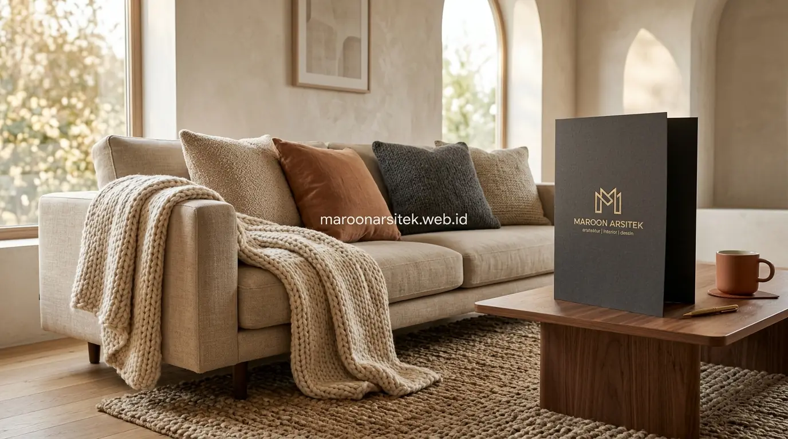

Kesan hangat pada interior rumah modern minimalis tidak hanya ditentukan oleh warna dinding, tetapi juga oleh pemilihan furnitur multifungsi, elemen tekstil, dan tata letak ruang yang mendukung kenyamanan penghuni sehari-hari. Maroon Arsitek merancang interior yang mengintegrasikan ketiga aspek tersebut melalui layanan jasa desain interior rumah agar konsep minimalis tetap terasa akrab dan tidak kaku.
Banyak pemilik rumah sudah memilih skema warna yang tepat namun ruang tetap terasa kurang hangat, karena elemen pendukung seperti furnitur dan tekstil belum diselaraskan dengan konsep keseluruhan. Bagian berikut menguraikan elemen tambahan yang melengkapi kehangatan interior minimalis rumah Anda.
Pemilihan Furnitur Multifungsi Bergaya Modern Minimalis
Furnitur multifungsi menjadi elemen penting dalam interior minimalis, karena desainnya yang ringkas mampu menghadirkan kesan lapang sekaligus tetap fungsional untuk kebutuhan sehari-hari penghuni rumah. Pemilihan furnitur yang tepat turut memengaruhi kesan hangat pada ruang secara keseluruhan.
Furnitur dengan bentuk sederhana namun material berkualitas, seperti kayu solid dengan finishing natural, memberikan kesan hangat tanpa perlu ornamen berlebihan yang justru dapat mengurangi kesan minimalis pada ruang.
Pemilihan ukuran furnitur yang proporsional dengan luas ruang turut penting diperhatikan, karena furnitur yang terlalu besar dapat membuat ruang terasa sesak meski secara visual sudah menerapkan skema warna hangat yang tepat.
Kombinasi Furnitur Kayu dengan Elemen Metal Minimalis
Kebutuhan tampilan modern namun tetap hangat dijawab melalui kombinasi furnitur kayu dengan aksen metal berdesain minimalis, seperti kaki meja atau rangka rak, yang menghadirkan kontras material tanpa mengurangi kesan akrab pada ruang.
Kombinasi ini banyak diminati karena mampu menyeimbangkan kesan modern dari elemen metal dengan kehangatan yang dihadirkan material kayu, sehingga ruang tidak terkesan terlalu industrial maupun terlalu tradisional.
Elemen Tekstil dan Aksesori sebagai Sentuhan Kehangatan
Elemen tekstil, seperti karpet, bantal, dan gorden dengan tekstur lembut, memberikan sentuhan kehangatan tambahan pada interior minimalis yang cenderung didominasi permukaan keras seperti lantai dan dinding. Elemen ini menjadi pelengkap penting yang sering terlewat dalam perencanaan interior.
Pemilihan warna tekstil yang selaras dengan skema warna dasar ruang membantu menjaga konsistensi visual, sementara variasi tekstur pada bahan tekstil menambah kedalaman yang membuat ruang tidak terasa monoton.

Penempatan aksesori dekoratif, seperti vas atau elemen kayu kecil, pada titik-titik tertentu turut memperkuat karakter hangat ruang tanpa membuat kesan ramai yang bertentangan dengan prinsip minimalis.
Pemilihan Tekstur Tekstil yang Menambah Kedalaman Visual
Kebutuhan ruang yang tidak terasa datar dijawab melalui pemilihan tekstil dengan variasi tekstur, seperti rajutan kasar dipadukan dengan kain halus, yang menghadirkan dimensi visual tambahan tanpa menambah jumlah warna pada palet ruang.
Variasi tekstur ini memberikan kekayaan visual yang membuat ruang minimalis tetap menarik dilihat, meski jumlah elemen dekoratif yang digunakan tetap terbatas sesuai prinsip kesederhanaan desain.
Tata Letak Ruang yang Mendukung Kesan Hangat dan Lapang
Tata letak ruang yang tepat turut memengaruhi kesan hangat pada interior, melalui penempatan furnitur yang mendukung interaksi antar penghuni tanpa menghalangi sirkulasi udara dan pencahayaan alami yang masuk ke dalam ruang. Tata letak ini melengkapi elemen warna, furnitur, dan tekstil yang telah dipilih sebelumnya bersama tim jasa interior profesional kami.
Penempatan furnitur yang tidak menghalangi jalur cahaya alami membantu menjaga ruang tetap terang secara alami, sehingga kesan hangat yang dihadirkan skema warna tidak berubah menjadi kesan gelap akibat kurangnya pencahayaan.
Pengaturan jarak antar furnitur turut memengaruhi kenyamanan penghuni saat beraktivitas, memastikan ruang tetap terasa lapang meski furnitur yang digunakan cukup lengkap untuk mendukung kebutuhan sehari-hari.
Penempatan Furnitur yang Tidak Menghalangi Cahaya Alami
Kebutuhan pencahayaan alami yang optimal dijawab melalui penempatan furnitur yang mempertimbangkan posisi jendela dan bukaan cahaya, sehingga furnitur tinggi tidak menghalangi masuknya cahaya matahari ke area ruang yang lebih dalam.
Penempatan yang tepat ini membantu menjaga konsistensi kesan hangat sepanjang hari, karena cahaya alami turut berkontribusi pada suasana ruang selain elemen warna dan material yang telah dipilih sebelumnya.